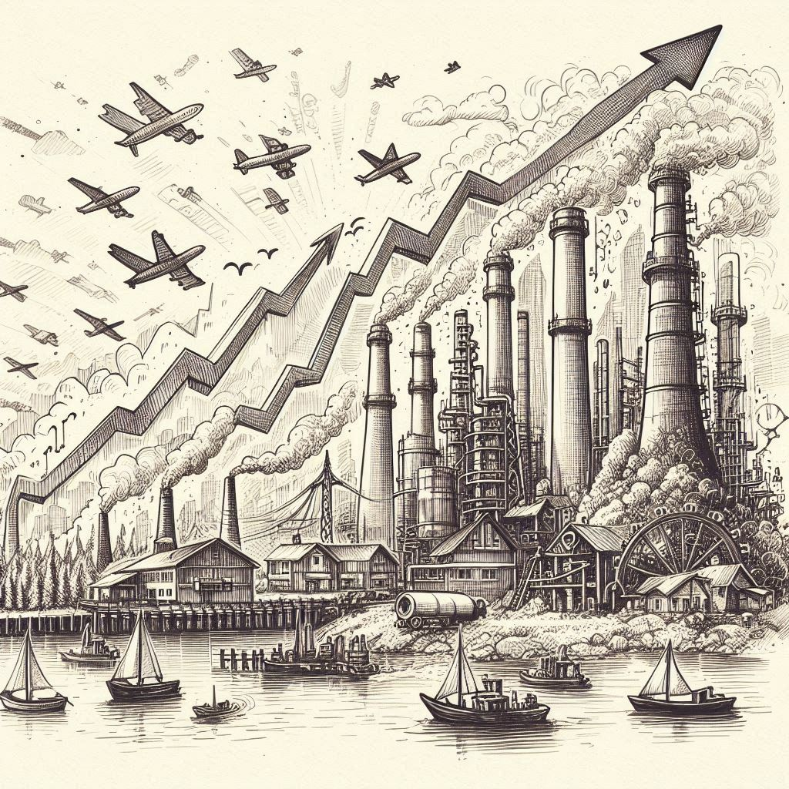

엔트로피
목차
작가
제레미 리프킨
출판일
2015년 4월 1일
감상평에 대한 AI그림
이 책은 에너지 자원의 고갈, 산업 가속화에 따른 에너지 소비량의 증가에 대해 문제로 삼고 말한다.
이 책을 통해 우리 사회와 환경을 바라보는 다른 관점을 알게 되었다.
또한 기술적인 발전을 통해 사회가 지속 가능한 발전을 실현할 수 있게 노력해야겠다고 느끼게 하는 책이었다.

감상평에 대한 AI 감정 평가
✨ 핵심 주제 명확성
에너지 자원의 고갈과 산업 가속화로 인한 에너지 소비 증가라는 책의 핵심 문제를 명확히 언급했습니다.
✨ 개인적 통찰력
책을 통해 사회와 환경을 바라보는 새로운 관점을 얻게 되었다는 점에서 개인적인 성장과 깨달음을 잘 표현했습니다.
✨ 구체성 부족
책의 구체적인 사례나 내용, 인상 깊었던 부분이 언급되지 않아, 감상평이 다소 일반적으로 느껴질 수 있습니다.